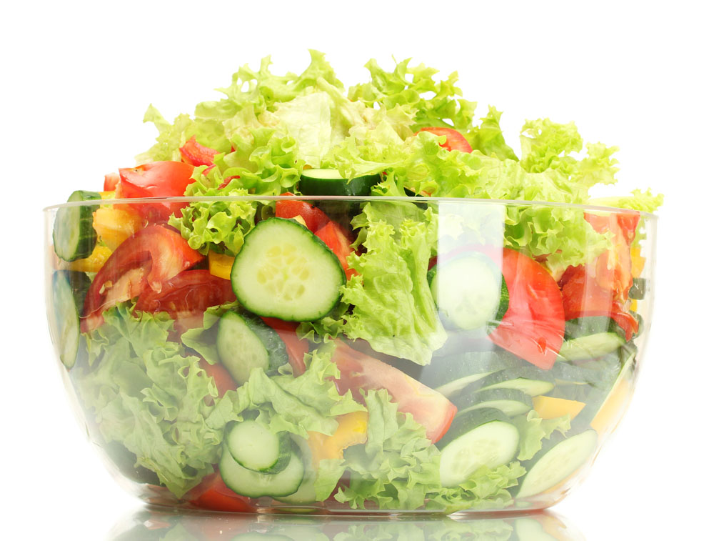

Home
Recipes
Techniques

Broccoli & Cranberry Salad
Steps
1.Combine all salad ingredients in a large mixing bowl; mix well. Combine dressing ingredients in a small mixing bowl.
2.Mix until thoroughly combined using a fork or wire whisk. Add dressing to salad and mix well.Refrigerate 1 hour.
Back
Start